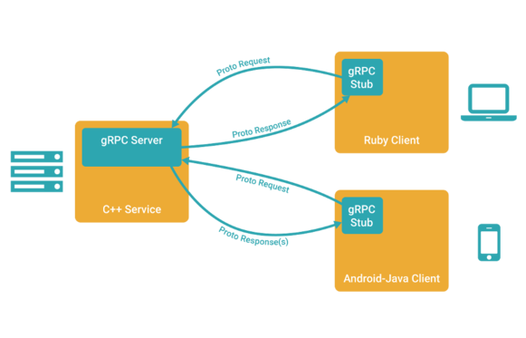

Almost exactly five years ago I posted a code sample of using the Protocol Buffers library for client-server communication. Even though protobufs are very convenient for serializing/deserializing data in multiple languages, I had to roll my own networking layer for the actual client and server.
I resorted to using boost::asio (which is on its way into C++17, by the way) to ease on the details in the C++ server. But even boost::asio won't do everything for you; for example, actually putting serialized protobufs on the wire requires additional mechanisms like length-prefixing and a special enumeration value in every message to select the request type ("message polymorphism"). It's a lot of custom coding for a problem that was solved long ago.
The reality is that I was hand-rolling a simple RPC implementation. Now, in 2016 it's no longer necessary as Google has recently open-sourced gRPC, the yang to the Protocol Buffers yin. gRPC expands the protobuf specification to define RPC services and then auto-generates server and client code from them, taking care of the whole networking layer. All you have remaining is to implement your custom application logic. gRPC is very new (still in beta, and only released last year), but it's a rewrite of the Google-internal Stubby system which has been used for at least a decade for the same purpose. Google appears to be committed to maintaining gRPC in the long haul since it uses it as the API for some of its cloud offerings.
The code for the new sample is available in full here. Here is the message / service definition:
syntax = "proto3";
package stringdb;
service StringDb {
// Get the value stored on the server for a given key
rpc GetValue (GetValueRequest) returns (GetValueReply) {}
// Set the server's value for a given key
rpc SetValue (SetValueRequest) returns (SetValueReply) {}
// Count the size of the server's value for a given key
rpc CountValue (CountValueRequest) returns (CountValueReply) {}
}
message GetValueRequest {
string key = 1;
}
message GetValueReply {
// Empty string returned when key not found on the server.
string value = 1;
}
message SetValueRequest {
string key = 1;
string value = 2;
}
message SetValueReply {
// Returns the value.
string value = 1;
}
message CountValueRequest {
string key = 1;
}
message CountValueReply {
// Returns the size of the value, in bytes. If key isn't found on the server,
// returns -1.
int64 count = 1;
}
It's longer than before because now it also specifies the service, which is an RPC contract the server and the client implement. We get a lot of buck from gRPC for this simple definition, because now the networking server logic is rolled into ~10 lines of C++ code. The vast majority of the code is spent imlementing the server-side RPC methods. Here's an example:
grpc::Status GetValue(grpc::ServerContext* context,
const stringdb::GetValueRequest* request,
stringdb::GetValueReply* reply) override {
// Get data from request; do work; populate reply; return a status.
return grpc::Status::OK;
}
On the Python side, all the client has to do is:
channel = implementations.insecure_channel('localhost', PORT)
stub = stringdb_pb2.beta_create_StringDb_stub(channel)
...
# Invoke methods on the stub...
request = stringdb_pb2.CountValueRequest(key=key)
response = stub.CountValue(request, TIMEOUT_SECONDS)
return response.count
It's quite incredible how much code gRPC saves you from writing... just compare to the previous sample!
But that's not all. What I have here is a very simplistic service. gRPC gives us many advanced features out of the box that would take serious time investment to implement:
- HTTP/2 support out of the box (reduced latency over traditional HTTP servers)
- Multi-language support for the network layers, not only data (de)serialization. Want to write your server in Go and client in Objective C? No problem
- Performance through thread pools and other server implementation variations
- Authentication with SSL/TLS or OAuth
- Blocking and non-blocking servers and clients
- Streaming
- Flow-control
- Cancellation and timeouts on RPC calls
Installing gRPC on an Ubuntu box was pretty simple. I just went through the instructions in their INSTALL.md file to build and install it from source. The Python plugin and related code can be installed with pip (be sure to use a virtualenv). One small wrinkle I ran into is that you also have to make install the protobuf library (pulled in as a Git submodule by the gRPC checkout process). Even though gRPC's Makefile compiles it, it doesn't install it.
Update (2016-04-21): An equivalent server in Go is also available - link.